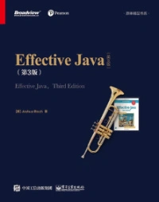
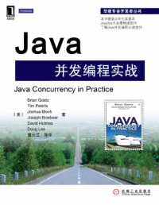
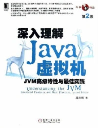
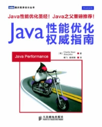
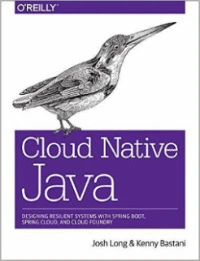

- 00 开篇词 以面试题为切入点，有效提升你的Java内功-极客时间.md.html
- 01 谈谈你对Java平台的理解？.md.html
- 02 Exception和Error有什么区别？-极客时间.md.html
- 03 谈谈final、finally、 finalize有什么不同？-极客时间.md.html
- 04 强引用、软引用、弱引用、幻象引用有什么区别？-极客时间.md.html
- 05 String、StringBuffer、StringBuilder有什么区别？-极客时间.md.html
- 06 动态代理是基于什么原理？-极客时间.md.html
- 07 int和Integer有什么区别？-极客时间.md.html
- 08 对比Vector、ArrayList、LinkedList有何区别？-极客时间.md.html
- 09 对比Hashtable、HashMap、TreeMap有什么不同？-极客时间.md.html
- 10 如何保证集合是线程安全的 ConcurrentHashMap如何实现高效地线程安全？-极客时间.md.html
- 11 Java提供了哪些IO方式？ NIO如何实现多路复用？-极客时间.md.html
- 12 Java有几种文件拷贝方式？哪一种最高效？-极客时间.md.html
- 13 谈谈接口和抽象类有什么区别？-极客时间.md.html
- 14 谈谈你知道的设计模式？-极客时间.md.html
- 15 synchronized和ReentrantLock有什么区别呢？-极客时间.md.html
- 16 synchronized底层如何实现？什么是锁的升级、降级？-极客时间.md.html
- 17 一个线程两次调用start()方法会出现什么情况？-极客时间.md.html
- 18 什么情况下Java程序会产生死锁？如何定位、修复？-极客时间.md.html
- 19 Java并发包提供了哪些并发工具类？-极客时间.md.html
- 20 并发包中的ConcurrentLinkedQueue和LinkedBlockingQueue有什么区别？-极客时间.md.html
- 21 Java并发类库提供的线程池有哪几种？ 分别有什么特点？-极客时间.md.html
- 22 AtomicInteger底层实现原理是什么？如何在自己的产品代码中应用CAS操作？-极客时间.md.html
- 23 请介绍类加载过程，什么是双亲委派模型？-极客时间.md.html
- 24 有哪些方法可以在运行时动态生成一个Java类？-极客时间.md.html
- 25 谈谈JVM内存区域的划分，哪些区域可能发生OutOfMemoryError-极客时间.md.html
- 26 如何监控和诊断JVM堆内和堆外内存使用？-极客时间.md.html
- 27 Java常见的垃圾收集器有哪些？-极客时间.md.html
- 28 谈谈你的GC调优思路-极客时间.md.html
- 29 Java内存模型中的happen-before是什么？-极客时间.md.html
- 30 Java程序运行在Docker等容器环境有哪些新问题？-极客时间.md.html
- 31 你了解Java应用开发中的注入攻击吗？-极客时间.md.html
- 32 如何写出安全的Java代码？-极客时间.md.html
- 33 后台服务出现明显“变慢”，谈谈你的诊断思路？-极客时间.md.html
- 34 有人说“Lambda能让Java程序慢30倍”，你怎么看？-极客时间.md.html
- 35 JVM优化Java代码时都做了什么？-极客时间.md.html
- 36 谈谈MySQL支持的事务隔离级别，以及悲观锁和乐观锁的原理和应用场景？-极客时间.md.html
- 37 谈谈Spring Bean的生命周期和作用域？-极客时间.md.html
- 38 对比Java标准NIO类库，你知道Netty是如何实现更高性能的吗？-极客时间.md.html
- 39 谈谈常用的分布式ID的设计方案？Snowflake是否受冬令时切换影响？-极客时间.md.html
- 周末福利 一份Java工程师必读书单-极客时间.md.html
- 周末福利 谈谈我对Java学习和面试的看法-极客时间.md.html
- 结束语 技术没有终点-极客时间.md.html
- 捐赠
周末福利 一份Java工程师必读书单-极客时间
你好，我是杨晓峰。今天这期周末福利，我整理了几本自己在学习和使用 Java 时用过的参考书，把它们分享与你。在专栏里，有不少同学留言让我推荐一些参考书。另外，我认为，书是个好的系统化知识来源，但更多提高还是来源于实践阅读源码、技术交流等，毕竟书籍也很难完全跟上技术和架构的变革，另外我也尽量缩减了书单的长度。
关于夯实 Java 编程基础，我推荐 Bruce Eckel 的《Java 编程思想》（Thinking in Java），非常有名的经典书籍。这本书的特点是，不仅仅介绍 Java 编程的基础知识点，也会思考编程中的各种选择与判断，包括穿插设计模式的使用，作者从理论到实践意义从不同的角度进行探讨，构建稳固的 Java 编程知识体系。
当然这本书也有不足之处，毕竟每个人的基础不太一样，如果你完全没有 Java 编程基础，也可以考虑其他的参考书，例如 《Java 核心技术》。
另外，这两本书的部分内容已经多少有点过时了，尤其是《Java 编程思想》。例如，目前很少会需要学习 Java 桌面图形类库等，较新的语法和 API 当然也没有包含，我的建议是尽管忽略过时内容，适当补充 Java 新技术的学习。
提到经典，自然也少不了 《Effective Java》，这本书的英文第三版已经在国内上市，涵盖了 Java 7 到 Java 9 的各种新特性。严格来说，这本书不算是一本基础书籍，但当你有一定基础后，还是非常建议通读一下的。关于这本书的阅读，我的建议是边学习边回顾，在吸收书中的经验时，多去想想自己在实际应用中是如何处理的。虽然《Effective Java》的具体章节可能是从某个点出发，但可以说都是对 Java、JVM、面向对象等各种知识的综合运用，对于设计和实现高质量的代码很有帮助。

《Head First 设计模式》 这本书就不用我再费笔墨去介绍了吧，能把设计模式用这种轻松的形式展现本身已经十分不易了，章节之间的联系让你可以反复加深印象，加上生动的表达方式和丰富的习题更容易沉浸其中。
这本书非常适合对面向对象和设计模式基础有限的同学。设计模式不是银弹，实践中也莫要为了模式而模式，掌握典型模式，能够举一反三就很好了，就当作是程序员之间沟通的“方言”。
谈过了 Java 基础，接下来聊聊并发和虚拟机的参考书。
《Java 并发编程实战》，作者全是响当当的人物，比如 Brian Goetz，我多次在专栏里引用他的观点，众多强力作者也保证了书的质量。抛开作者光环，这本书的内容全部建立在理论之上，先讲清道理再谈实践，可以真正让你知其然也知其所以然。这本书更加侧重并发编程中有哪些问题，如何来深刻地理解和定义问题，如何利用可靠的手段指导工程实践，并没有过分纠结于并发类库的源码层面。

这本书的我的学习建议是，尽量充分利用其中提供的样例代码，结合自己的业务实践去深入学习，毕竟这本书的内容有些偏理论，可能并不适合你快速掌握所谓并发“核心”技术。
关于 JVM 的学习，不用我多说了吧，看过专栏的同学肯定都知道，我经常推荐周志明的《深入理解 Java 虚拟机》，可以说是国内最好的 JVM 书籍之一。

我这里并没有单独推荐类似 GC 算法等书籍，它们对于大多数 Java 工程师的价值也许有限。
关于性能优化，我推荐 Charlie Hunt 和 Binu John 所著的《Java 性能优化权威指南》（Java Performance），也是我上次在直播时向大家推荐的。Java 之父 James Gosling，也力荐这本参考书。

但这本书也存在着不足，里面过于偏重 Solaris 等商业操作系统和相关工具，我建议你在阅读的时候，尽量体会其思路和原理，更加侧重于 Linux 等主流开放平台。
还有一些如开源软件和互联网架构相关的图书可以作为扩展阅读，你可以参考下面这几本。
《Spring 实战》
可以说 Spring 等相关框架已经成为业务开发的事实标准，系统性地掌握 Spring 框架的设计和实践，是必需的技能之一。
《Netty 实战》
Netty 在性能、可扩展性等方面的突出表现，已经得到充分验证，作为基础的通信框架，已经广泛应用在各种互联网架构、游戏等领域，甚至可以说，如果没有仔细分析过 Netty，对 NIO 等方面的理解很可能还在很肤浅的阶段。
《Cloud Native Java》

Java 应用程序架构处于飞快的演进之中，微服务等新的架构应用越来越广泛，即使未必是使用 Spring Boot、Spring Cloud 等框架，但是系统的学习其设计思想和实践技术，绝对是有必要的。当然如果你在实践中使用 Dubbo 等框架，也可以选择相关书籍。
前沿领域的变化非常快，很多风靡一时的开源软件，在实践中逐渐被证明存在各种弊端，或者厂商停止维护。所以这部分的学习，我建议不要盲目追新，最好是关注于分布式设计中的问题和解决的思路，做到触类旁通，并且注重书籍之外的学习渠道。
下面两本并不算是 Java 书籍，但 Java 程序员进阶少不了对互联网主流架构的学习，了解分布式架构、缓存、消息中间件等令人眼花缭乱的技术，对于有志于成为架构师的 Java 工程师来说非常有帮助。
《大型分布式网站架构设计与实践》
这本书总结了作者在构建安全、可稳定性、高扩展性、高并发的分布式网站方面的心得。
《深入分布式缓存：从原理到实践》
这本书融合了原理、架构和一线互联网公司的案例实践，值得参考。
下面给入选精选留言的同学送出 15 元学习奖励礼券。专栏即将进入尾声，希望所有订阅的同学能够坚持到底，也欢迎大家留言分享自己学习或面试的心得体会。
© 2019 - 2023 Liangliang Lee. Powered by gin and hexo-theme-book.